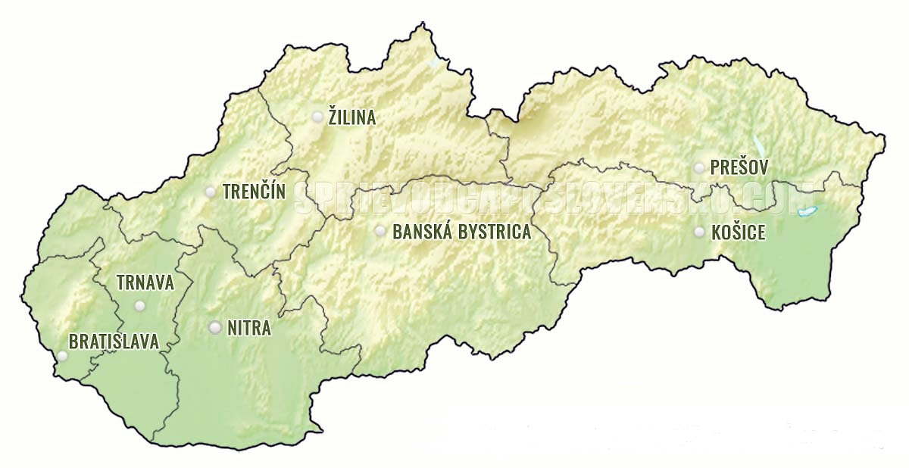
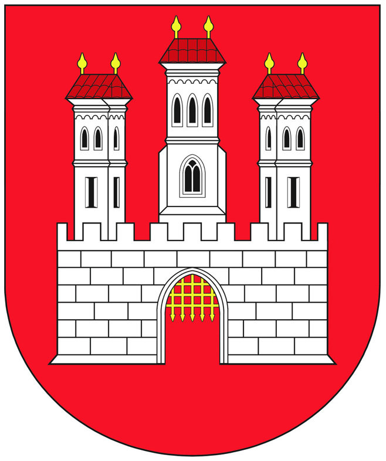
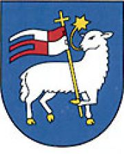
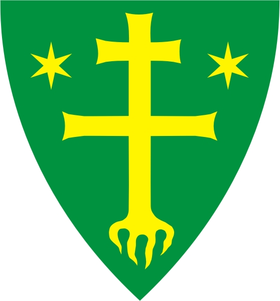
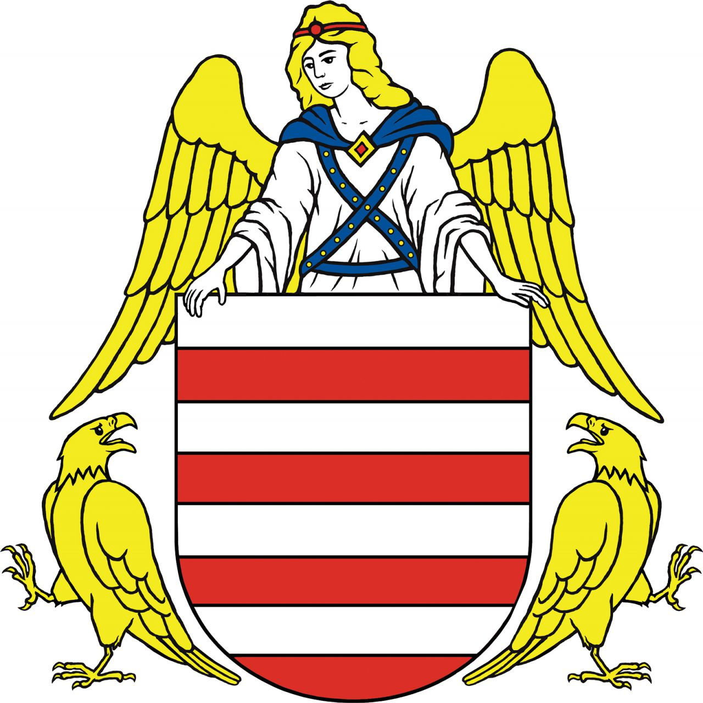
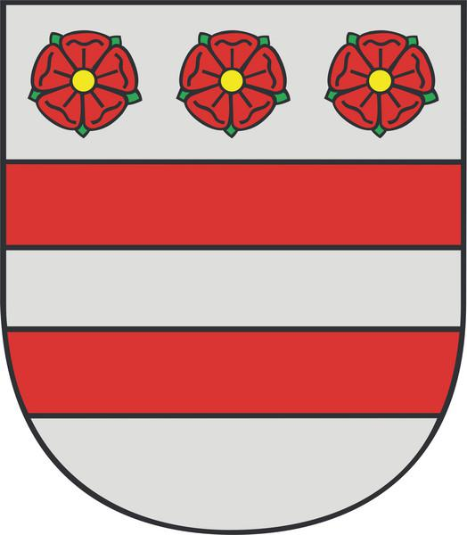

Slovenské mestá

Bratislava
Bratislava je hlavné a rozlohou i počtom obyvateľov najväčšie mesto Slovenska. Podľa Štatistického úradu tu na konci roka 2017 žilo približne 430-tisíc obyvateľov, iný zdroj však hovorí, že tu reálne žije až približne 666-tisíc obyvateľov a ďalších 100-tisíc sem dochádza za prácou. 
Trenčín
Trenčín je jedno z troch najstarších slovenských miest a zároveň najväčšie a krajské mesto Trenčianskeho kraja. Trenčín sa nachádza v severo-západnej časti Slovenska, je prirodzeným geografickým centrom stredného Považia. Hlavným tokom v meste je rieka Váh. 
Žilina
Žilina je krajské a okresné mesto na severnom Slovensku. Leží na sútoku riek Váh, Kysuca a Rajčanka. Počtom obyvateľov (83 067 osôb v novembri 2018) je Žilina štvrtým najväčším mestom na Slovensku. Je administratívnym, hospodárskym, dopravným a kultúrnym centrom severozápadného Slovenska, niekedy sa jej hovorí „perla na Váhu“. 
Banská Bystrica
Banská Bystrica je metropola stredného Slovenska, krajské mesto Banskobystrického kraja a okresné mesto Banskobystrického okresu. Počtom obyvateľov sa radí na piate najväčšie mesto na Slovensku. 
Prešov
MOJA DOMOVINA!
